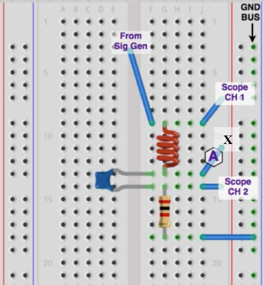

Objective: In your lab notebook, write a few sentences stating your objective in conducting this laboratory exrercise. Consider the following questions:
What kind of circuit am I examining?
What is new about this circuit as compared to circuits previously studied?
What theoretical predictions do you have regarding circuit behavior?
What effects do you expect to observe?
Your answers should be specific to the type of circuit you are examining, but do not discuss specific component values.
Equipment: Proto-board, digital oscilloscope, resistor, capacitor, inductor.
RLC RESONANT CIRCUIT THEORY.
You will be studying properties of the circuit pictured in Figure 10.4.1.
Figure10.4.1. We developed the theory for this circuit in Example 3.7.8. In your lab notebook, summarize the main theoretical results/circuit behaviors that you expect to observe today. To guide you, here are a few questions you may wish to address:
What behaviors do you observe as \(\omega\rightarrow 0\text{?}\)
What behaviors do you observe as \(\omega\rightarrow\infty\text{?}\)
Are there special frequencies that are appropriate to discuss? What are they? What happens at that frequency?
These are just a few examples. Are there any other important qualities that could be tested experimentally?
RLC CIRCUIT EXPERIMENTS.
In your lab notebook, describe a procedure that you intend to follow. This procedure should be designed to address the points that you’ve discussed above in the theory section. Here are a few questions you may wish to consider:
What quantities do you wish to observe, based on the theory above?
What equipment do you intend to use as a voltage source?
What equipment do you intend to use to measure the desired quantities?
If using the oscilloscope, describe the functionality that will be used (e.g. cursors, ‘MEASURE’ functions, etc.). Why did you make your choice?
What variable are you going to vary? How many measurements will you use? How are you going to determine measurement spacing?
How are you going to display your results? How will you relate your results back to theoretical predictions?
How will you identify when you are at or near the resonant frequency?
Build your circuit on the prototyping board. When laying out your circuit, it can be useful to build it in a way that is clean and similar to the circuit diagram when possible. See Figure 10.4.2 for an illustration of how one may do this.

Figure10.4.2.[CREATE NEW IMAGE] Suggested prototyping board layout.
As you proceed to conduct your experiment, discuss any changes you have to make to your procedure and the reason for those changes. Additionally, if you observe some behavior that you were not expecting or that confuses you, make a note of it in your notebook. Also, please remember that when using the oscilloscope to measure signals, you should 1) adjust the vertical scaling on each channel so that the signals are displayed as large as possible on the screen, and 2) adjust the timebase so that there are 3-5 cycles displayed on the oscilloscope screen. Adjust these oscilloscope settings as needed for each frequency at which you take data.
Tip: Your starting input voltage should be sinusoidal with amplitude \(V_{\text{in},0}=10\text{V}_\text{p-p}\) and an initial frequency of \(f=200\)Hz. Monitor \(V_{\text{in},0}\) and do your best to maintain this input amplitude throughout the experiment (though it may not be possible).
Once you’ve completed the experiment above, return to the resonance frequency that you observed and do the following:
Make sure you always turn off the circuit power when moving probes or changing components!
Move the oscilloscope Channel 1 probe to the node marked X on the circuit diagram.
Make sure that both channels have the same VOLTS/DIV settings.
Press the MATH button (in Channel 1 and 2 controls area) and explore the various calculations that can be accomplished using the functions in this menu.
Use options in the MATH menu to subtract the Channel 2 signal from the Channel 1 signal.
Q: What are you measuring when you do this?
Q: What do you observe?
Turn off your circuit. Switch the positions of L and C in your circuit (leaving the Channel 1 probe where it is) and repeat the previous bullet points.
Q: What are you measuring now?
Q: What do you observe?
Q: Do your observations make sense to you? How do you expect your observed MATH signals to compare to \(V_\text{in}\) and \(V_R\text{?}\)
Once you have completed data collection and analysis, write a discussion section that summarizes your results and compares them to your initial theory.
What options can you think of to compare theory to experiment in this lab?
What option(s) did you choose for your comparison of theory to experiment? Why did you make the choice that you did?
Address any discrepancies that you may have seen along with any issues you may have run into. Speculate regarding solutions/explanations related to these discrepancies/issues.